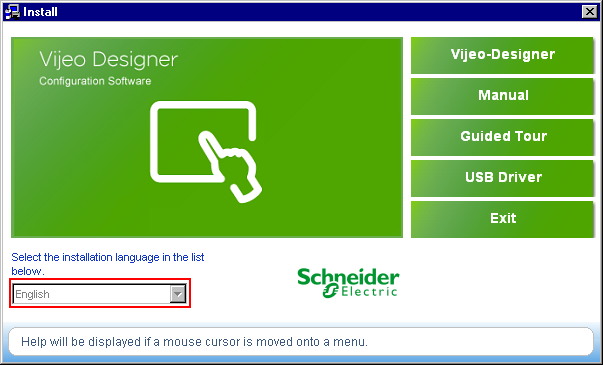

|
|
|
|
|
|
|
|
The Vijeo Designer installation DVD contains the following software programs:
Software Program |
Description |
Vijeo Designer |
The development environment. In Vijeo Designer, you can design and build a Vijeo Designer Runtime application. |
Vijeo Designer Runtime |
The run-time environment. Installed on the target machine, Vijeo Designer Runtime runs applications built in Vijeo Designer. For more information, see Section 25.5, Installing Vijeo Designer Runtime. |
This section describes the steps to install Vijeo Designer.

Vijeo Designer projects are not backwards compatible—new projects cannot be opened by previous versions of Vijeo Designer. It is recommended you export or backup your project before opening it in an updated version of the application. For information on backing up or exporting projects, see Section 21.4, Importing and Exporting Projects, and Section 21.5, Backing Up Projects.
If you have trouble running Vijeo Designer, you should uninstall Vijeo Designer and then reinstall the application.
Check with your system administrator before you install Vijeo Designer on Windows XP. Only users with Administrator Rights can install the application. Users with User Rights cannot install but can run the application.

Before you start using Vijeo Designer, you should read the README file. Access this file from the Start menu, and then select Programs, Schneider Electric, Vijeo Designer, and README.
Shut down all applications except the installer. Make sure you shut down all resident applications, as well as any resident-type programs (for example, virus checkers) that may be running.
Insert the DVD into your DVD-ROM drive.
The Setup window for Vijeo-Designer should open automatically.
If not, at the Windows Start menu, click Run and type x:\install.exe (where
x is your DVD-ROM drive name).
In the Install menu, select the language you want to install from the Choose Setup Language drop-down list box. The user documents and menu interfaces will appear in the selected language.

Follow the Wizard's on-screen instructions to install Vijeo Designer, which include:
Accepting the terms of the license agreement
Entering customer information, the product reference, and serial number
Selecting the languages you want to install
Choosing the default language for the application
Selecting the installation folder
Selecting the project folder
Choosing whether you want to create a shortcut on the desktop.
At the prompt to select the installation folder, you can choose the default, c:\Program Files\Schneider Electric\Vijeo-Designer, or another folder. At the prompt to select the project folder, you can choose the default or another folder.

Due to user permissions and access restrictions, do not install Vijeo Designer on c:\Documents and Settings\<user name>.